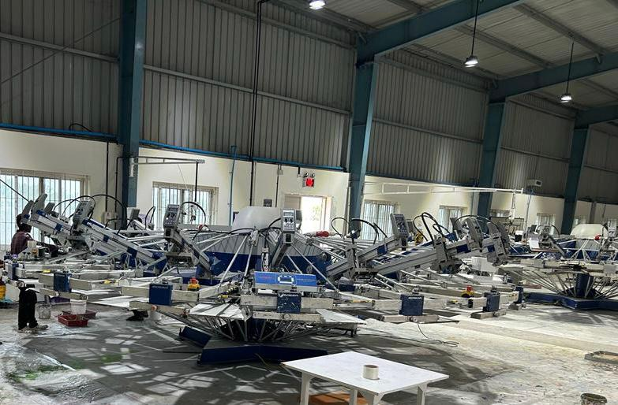

Established in 2019, Remmy Textiles is a third-generation family-based company. We are an emerging manufacturer and exporter of knitted garments with an integrated factory producing over 12 million pcs/year. Our core competency lies in understanding our customers' buying preferences and delivering consistent, high-quality products that meet international compliance standards. With a keen eye on the latest fashion trends, we are committed to providing exceptional products that exceed our customers' expectations.


INFRASTRUCTURE
-
SPINNING MILL
Unveiling a state-of-the-art spinning mill housing 18,000 meticulously calibrated spindles, driving an annual production of 4200 metric tons of cotton yarn spanning counts from 10s to 40s. Seamlessly integrating automation and precision, our facility ensures optimal efficiency while maintaining uncompromising quality standards, delivering flawlessly spun yarn from raw cotton fibers. Powered by cutting-edge contamination control technology, our commitment to excellence extends to sustainability, guaranteeing pristine yarn output. As pioneers of innovation in the textile sector, we invite you to join us in reshaping the landscape of cotton yarn production through our relentless pursuit of superior craftsmanship and advancement.
-
KNITTING DIVISION
Within our facility, we specialize in the production of an extensive range of fabrics including single, spandex, double jersey, and fleece grey variants. Boasting a substantial capacity of 2500 metric tons per year, our commitment to excellence is unwavering. To guarantee top-notch output, we maintain steadfast collaborations with esteemed, long-standing partners for intricate track designs, feeder stripes, autostripes, and jacquard fabrics. This synergy enables us to consistently deliver high-quality textiles that meet and exceed industry standards. From versatile basics to intricate patterns, our facility stands as a testament to innovation and collaboration, offering a diverse array of fabric options to cater to a wide spectrum of textile needs.
-
PROCESSING MILL
With an impressive annual capacity of 3500 tons of finished fabrics, our facility stands as a paragon of textile production. Powered by cutting-edge Turkey-made DMS Dilmenler machinery, encompassing dyeing, drying, stentering, and compacting processes, we ensure precision at every stage. Our machinery, including vessels ranging from 25 to 2000 kg, boasts versatile high and low-temperature capabilities, enabling us to handle a diverse range of fabric types. Employing Datacolor's Match Textile technology, we calculate recipes with unmatched accuracy and speed, further elevating our efficiency. The culmination of these advanced processes and technologies results in superior fabric outcomes that consistently meet the highest standards. From production to finishing, our facility is dedicated to delivering excellence, setting new benchmarks in the world of textile manufacturing.
-
PRINTING

Our SEDEX approved printing facility stands as a beacon of responsible production, capable of delivering 20,000 to 30,000 units per day. Equipped with a versatile range of printing options, including conventional, manual, and MHM Automatic (14-16 colors), we offer unparalleled flexibility to cater to diverse requirements. Supported by an in-house design team, we facilitate rapid development, ensuring timely realization of creative concepts. With an unyielding commitment to top-notch quality and efficient production, we take pride in providing reliable support to bring visions to life. Join us in embracing innovation and creativity as we embark on a journey of transforming ideas into tangible, high-quality printed products. Together, we can redefine possibilities in the realm of printing, setting new standards and inspiring new horizons.
-
EMBROIDERY
Experience the epitome of precision in embroidery with Barudan's renowned Japanese machines. With a formidable production capacity of 15,000 units per day, our facility is your trusted partner for impeccable sequence embroidery, intricate stone works, captivating stud designs, and exquisite embellishments. The legacy of Barudan machines ensures every stitch is a masterpiece, radiating finesse and sophistication. Entrust us with your vision, and witness the transformation of fabric into a canvas of artistry. Elevate your brand to new heights as we infuse each piece with an aura of luxury and individuality. At the intersection of innovation and tradition, our commitment to quality craftsmanship paves the way for a partnership that redefines excellence in the realm of embroidery. Your brand's journey towards distinction begins with us – let's embroider the future together.
-
GARMENTING
Embark on a transformative garmenting journey with Remmy Textiles Pollachi. Our state-of-the-art facility is a testament to innovation and craftsmanship, offering a dynamic range of garmenting solutions that embody quality and style. With meticulous attention to detail, we specialize in crafting garments that seamlessly merge comfort, functionality, and fashion. From cutting-edge designs to precision stitching, our skilled team ensures each garment reflects the epitome of excellence. Leveraging cutting-edge technology and a commitment to sustainable practices, Remmy Textiles Pollachi delivers garments that resonate with modern sensibilities while honoring traditional craftsmanship. With a production process rooted in efficiency and creativity, we invite you to experience a new dimension of garmenting where every piece tells a unique story of meticulous artistry. Join us in shaping the future of fashion through Remmy Textiles Pollachi's unrivaled garmenting expertise.
PRODUCTS


OUR TRUSTED PARTNERS


WHY US?
-
SOP
We follow Kanban Based Progressive Bundle System to control production as part of Just In Time (JIT) and Lean Manufacturing System which acts as a tool for an inventory organisational structure that uses visual cues to move inventory through various stages of the manufacturing process and aims to prevent inventory pileup by initiating production only to restock empty reserves.
-
QUALITY ASSURANCE
We have got an well-organized Quality Assurance team which looks in to the quality management through continuous online checks from incoming fabric to finished garments using the latest quality assurance technologies which ensures the garment to be flawless.
-
TESTING CAPABILITY
Remmy Textiles ensures top-notch quality with comprehensive testing capabilities, including Dimensional Stability to Washing for both fabric and garments, Fabric Weight (GSM), Spirality, Appearance After Wash (Single, Three, Five Washes), Print Durability (Single, Three, Five Washes), Colour Fastness to Washing and Rubbing, and Button Pull Strength Test.
-
SUSTAINABILITY
Remmy Textiles actively promotes well-being and sustainability through CSR. Vaccination drive (3000), school & healthcare donations uplift communities. Embracing eco-friendly practices: wind energy, water purification, rainwater harvesting. Committed to employee welfare, strict compliance. A responsible, caring, sustainable partner.
Wind Energy
We always hold the environment as a high priority, we have invested in wind energy as an environmentally friendly power source situated in the outskirts of Pollachi, where we get an average wind velocity of 15 to 20 kmph, thereby providing us with ample renewable energy to supplement our electricity needs.
Water Purification
We have constructed our own ETP (Effluent Treatment Plant). This type of waste water treatment method is particularly designed to purify industrial wastewater for its reuse. This process recycles up to 90% of the water used, while helping us release safe water back into the environment.
Rainwater Harvesting
Since we are in the southern part of India we get nearly 94.5 cms of rain annually, bu because of seasonal changes there is great spatial variation. At our facility we have constructed an abundant rain water harvesting system to catch runoff, which is then purified and used as groundwater supplement for the factory.